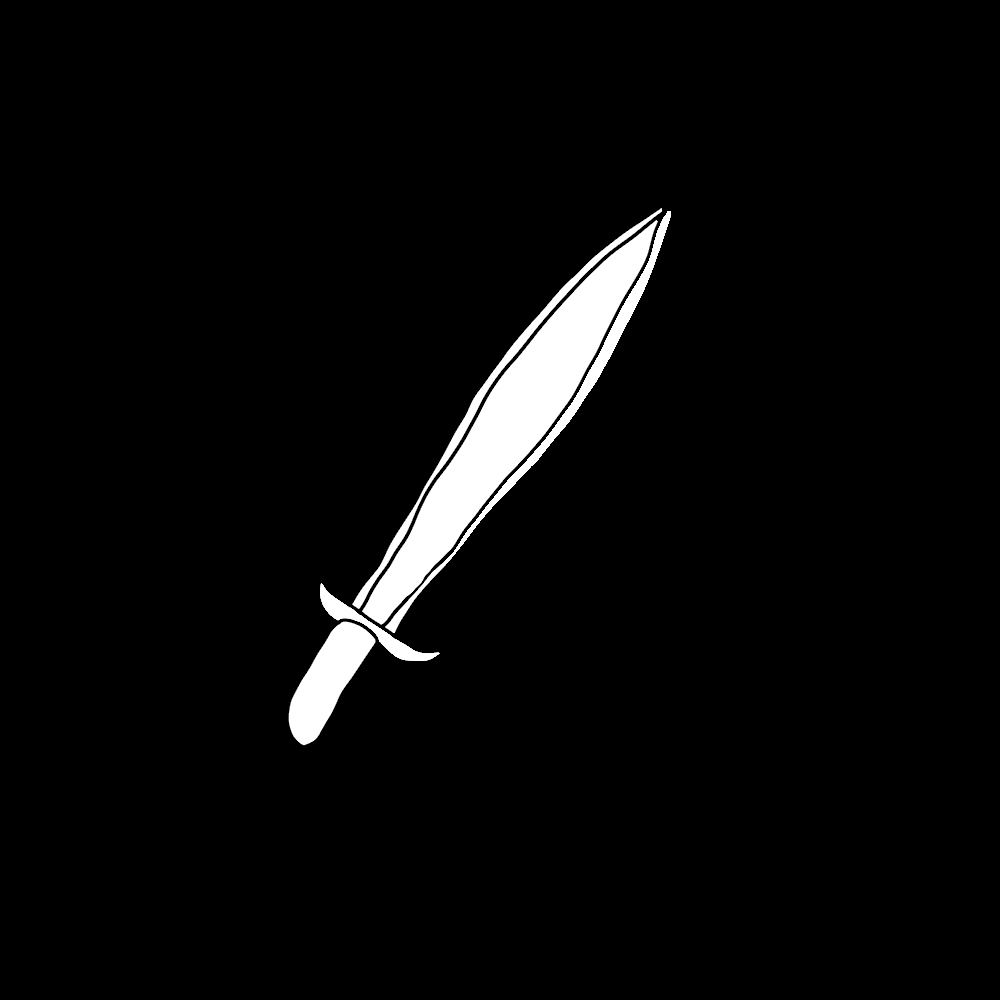
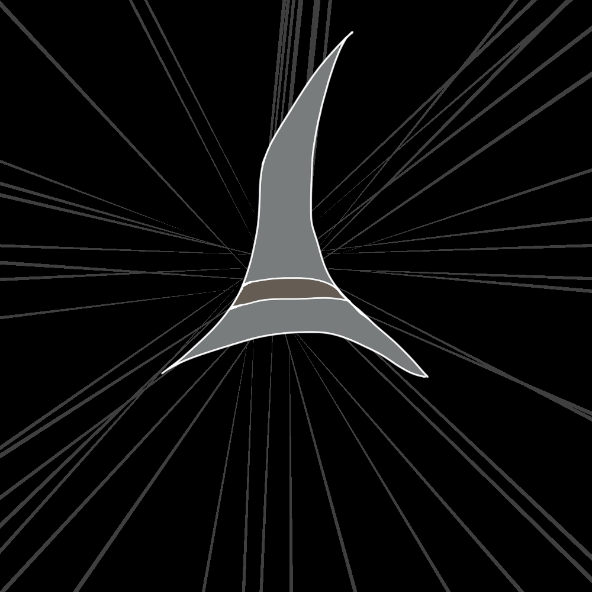
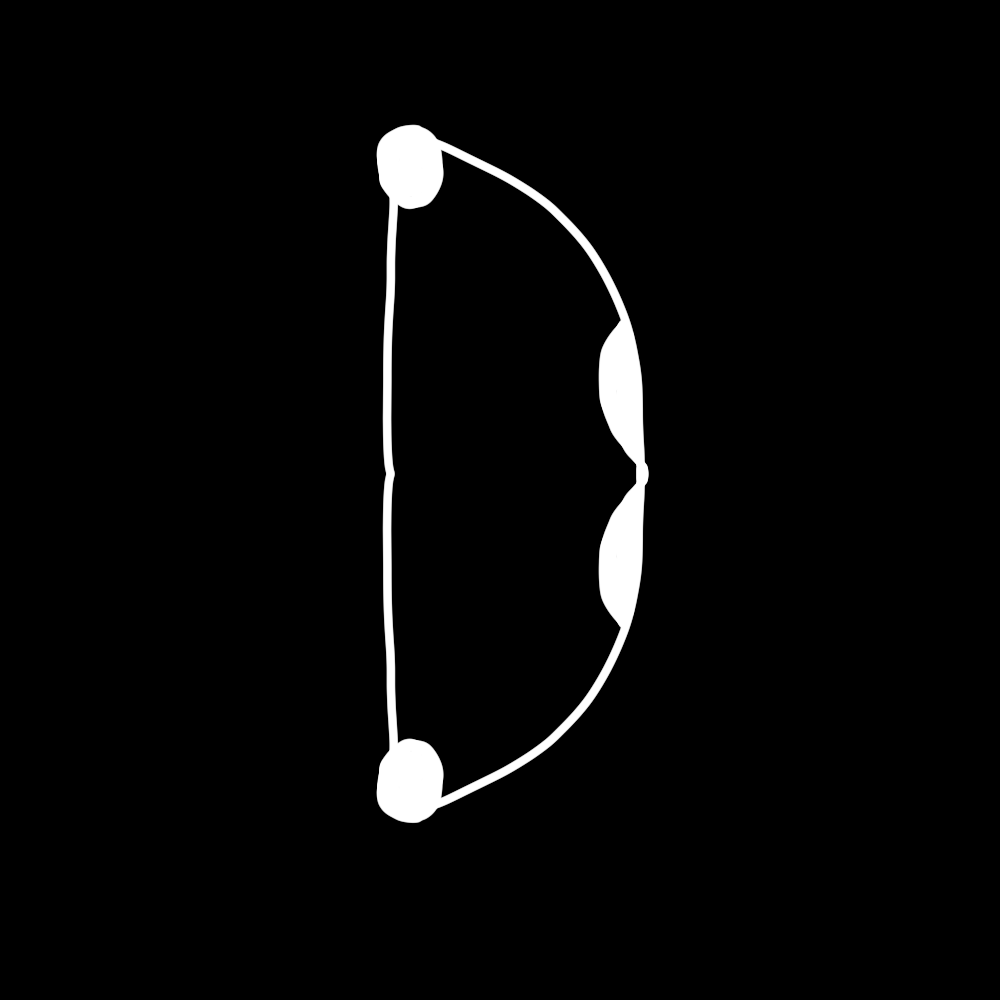

Overview
Brylithia is a top down MMORPG with replay ability that is left up to the player. It is an open world adventure awaiting to be taken on. You will start with the game’s tutorial learning the bare minimum about the game. These mechanics that will be shown in the begging of the game with be present across the whole game and will be very important to your success as a Brylaerian. After the tutorial you will be placed in smalltown called Brylerton. From here your journey will begin. There is not a specific way to play this game and there is no single story to be played through. You may become anything you choose to be at any time, you have full control over your destiny.
Combat
The combat in Brylithia is very simple. There are 3 main combat styles which are melee, ranged, and magic. Each combat style has its own individualized abilities that can be optimized situationally. Each combat style will have two variants, Two-handed and then Dual wield. Note that each main hand weapon that is designed as a duel wield weapon will have an off-hand equivalent. With that said depending on what style you are using, Two-handed or duel wield, some abilities will not be available because they are style locked.
Two-handed
Two-handed by design meaning wielding a large singular blade which as a result they have a longer reach. Within the two-handed category, there will be some weapon types with an extended reach meaning you can be farther away and still deal damage. And if that is not enough there is more. The two-handed style has area of effect abilities that can deal damage to multiple enemies.
Duel-Wield
Duel wield by design has two, on main hand and one-off hand, weapons that are shorter blades. This would mean that with duel wield the up close and personal play style will be a must. The duel wield melee style will have faster attacks but no area of affect abilities. On a one on one duel wield will have a higher damage output then two-handed.
Melee 
Melee will use rage which must be built up to use stronger and more devastating abilities.
Magic 
Magic uses the elements around you to conjure up spells. The elements are Air, Fire, Earth, and Water and these spells will need runes to power them. Note that the spells and the abilities for the magic class are separate but a combat spell must be chosen in order to use the abilities. For example, the water strike spell must be chosen to have the ability to use Enflame.
Ranged
Range is a combat style that uses bows, crossbows, and other thrown or shot weapons. Due to the essence of the ranged combat style, the range at which a monster will be slightly longer than that of magic.
Skills
There are skills that can be trained up to progress into late game content that will provide a challenge across all fronts.
Quests
Quests are stories driven by events of past, present, and future to create a lore filled environment for the player to explore.